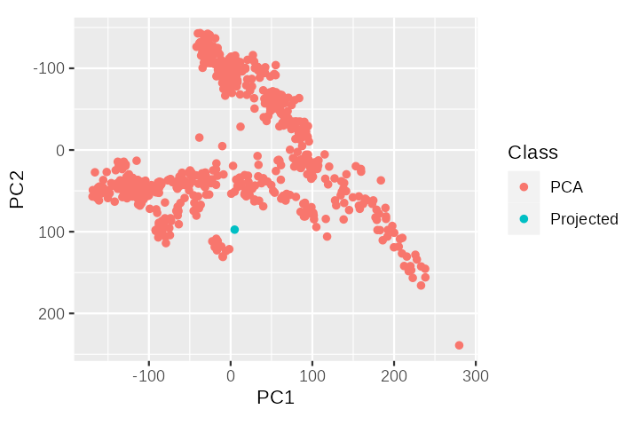

trident list --remote --packagesAnalyzing our data with reference data
With our data neatly packaged we can approach the actual challenge of reconstructing its genetic affiliation and origin story. To do so we require reference data to compare it to, e.g. with a principal component analysis.
Acquiring modern reference data
In its public community-archive the Poseidon ecosystem features a curated set of publication-wise packages with ancient and modern genotype data.
We can get an overview over all publication-wise packages available there with trident’s list subcommand:
Note
A more interactive way to get an overview is the archive explorer on the Poseidon website.
As our sample of interest was found in Western Eurasia a first valuable point of reference is genotype data from various modern populations from there. The following list includes a number of relevant populations. It can be downloaded here.
modern_western_eurasian_populations.txt
Abazin
Abkhasian
Adygei
Albanian
Armenian
Armenian_Hemsheni
Assyrian
Avar
Azeri
Balkar
Basque
BedouinA
BedouinB
Belarusian
Bulgarian
Chechen
Circassian
Croatian
Cypriot
Czech
Darginian
Druze
English
Estonian
Ezid
Finnish
French
Georgian
Greek
Hungarian
Icelandic
Ingushian
Iranian
Italian_North
Italian_South
Jew_Ashkenazi
Jew_Georgian
Jew_Iranian
Jew_Iraqi
Jew_Libyan
Jew_Moroccan
Jew_Tunisian
Jew_Turkish
Jew_Yemenite
Jordanian
Kabardinian
Kaitag
Karachai
Kubachinian
Kumyk
Kurd
Lak
Lebanese
Lebanese_Christian
Lebanese_Muslim
Lezgin
Lithuanian
Maltese
Moldavian
Mordovian
Norwegian
Orcadian
Ossetian
Palestinian
Romanian
Russian
Sardinian
Saudi
Scottish
Sicilian
Spanish
Spanish_North
Syrian
Tabasaran
Turkish
Ukrainiantrident includes the fetch subcommand, which allows to download packages that contain samples with this group attribution from the community archive.
trident fetch -d refData --fetchFile modern_western_eurasian_populations.txtrefData
├── 2012_PattersonGenetics-2.1.3
├── 2014_LazaridisNature-4.0.2
├── 2016_LazaridisNature-2.1.3
├── 2019_Biagini_Spain-2.2.1
└── 2019_Jeong_InnerEurasia-3.0.1This works, because the population list above already has the same structure as the selection language trident uses for fetch and forge.
Merging the reference data with our data
We now have our own Poseidon package for the ice mummy in a directory ice and various packages with modern reference data in refData. Our package features genotype data in EIGENSTRAT format, the reference data packages include data in PLINKs binary format.
tridents most notable feature is the ability to merge the exact samples we require from both data sources at once with the forge subcommand.
trident forge \
-d refData \
-d ice \
--forgeFile modern_western_eurasian_populations.txt \
-f "<ice>" \
--outFormat EIGENSTRAT \
--intersect \
-o iceWithRefNote how we list two directories as data sources with -d/--baseDir. forge discovers and reads all Poseidon packages both in refData and ice.
It then constructs a subset- and merge operation, by parsing the selection language from both the --forgeFile modern_western_eurasian_populations.txt and the individual forge string -f "<ice>".
Note
The forge language is a powerful DSL (domain specific language) that allows positive and negative selection of individuals (in <...>), populations and Poseidon packages (in *...*). It’s documented here.
forge reads both data in EIGENSTRAT and in PLINK’s binary format in constant memory via stream-processing. It can also produce both formats for the output package, though the default is the more space efficient PLINK format, so we have to set --outFormat EIGENSTRAT here for our downstream applications.
The --intersect flag is a reaction to the fact that our input packages feature different SNP sets: Some include only the ~600.000 HumanOrigins SNPs, others the ~1.240.000 1240K SNPs. As a default forge returns the union of all SNP sets it encounters, which would here yield many missing entries for the modern reference data.
When the forge process has completed we can inspect the result with the summarize subcommand:
trident summarize -d iceWithRefReducing the data size
Our iceWithRef package is ready for downstream analysis, but it is also a bit bulky. It includes, for example, 314 Russian samples alone. We could probably reduce its size without loosing much statistical power for the PCA we want to run below.
One way of doing so would be, to limit the maximum number of samples per population. We can easily subset the package with trident forge, if we can obtain a list of samples we want to keep. But how do we get this list?
The Poseidon framework includes the qjanno software tool that allows to query arbitrary .janno and .txt files as SQLite database tables and thus enable advanced selection operations.
We can install it just as trident:
# download the current stable release binary
wget https://github.com/poseidon-framework/qjanno/releases/latest/download/qjanno-Linux
# rename it to simply qjanno
mv qjanno-Linux qjanno
# make it executable
chmod +x qjanno
# run it to test if it is working
./qjanno -hWith qjanno ready we can query the .janno file for arbitrary information, e.g. the number of samples from each country.
./qjanno "
SELECT Country,
count(*) as n
FROM d(iceWithRef)
GROUP BY Country
ORDER BY n
"
Note
The d() pseudo-function in the FROM ... field of the query is one of three pseudo-functions to automatically search for .janno files to load them into qjanno. Read more about that here.
Note
If we forget the available columns in .janno files the -c option returns a list for us:
qjanno "SELECT * FROM d(iceWithRef)" -cWith this power we can construct a two-step query for random samples for each group.
# construct a randomly ordered list of groups and their samples
qjanno "
SELECT Poseidon_ID,
Group_Name,
row_number() OVER (PARTITION BY Group_Name ORDER BY random()) rn
FROM d(iceWithRef)
" --raw > id_per_sample.txt
cat id_per_sample.txt
# subset samples from that list and render a forge selection language file
qjanno "
SELECT '<'||Poseidon_ID||'>'
FROM id_per_sample.txt
WHERE rn <= 10
ORDER BY Group_Name DESC;
" --raw --noOutHeader > ten_samples_max.txtten_samples_max.txt again has the structure of the forge selection language and we can run it with it to derive a smaller analysis dataset.
trident forge \
-d iceWithRef \
--forgeFile ten_samples_max.txt \
--outFormat EIGENSTRAT \
-o iceWithRefSmall
trident summarize -d iceWithRefSmall
Note
Note that iceWithRefSmall includes a .bib file with exactly these references needed for the (random) subset of samples we selected now. Literature references are linked to samples in Poseidon packages and forge moves them accordingly to newly created packages.
When used consistently throughout the analysis pipeline this feature can simplify the bibliography compilation at the end.
Performing a PCA analysis
After all these technicalities we can finally go back to the scientific question that motivated all of this: What is the genetic profile of the ice mummy Prof. P. had found in the Tyrolean Alps?
Here we use the smart_pca() function from the smartsnp R package1.
# read the ind file
ind <- readr::read_tsv(
"scratch/iceWithRefSmall/iceWithRefSmall.ind",
col_names = c("id", "sex", "pop")
)
# run smart_snp() with the iceWithRefSmall dataset
pca_out <- smartsnp::smart_pca(
"scratch/iceWithRefSmall/iceWithRefSmall.geno",
sample_group = seq_len(nrow(ind)),
missing_impute = "mean",
# project the "ice" sample in the pca space constructed
# with modern reference data
sample_project = which(ind$id == "ice"),
pc_axes = 2
)We can save this intermediate result in the file system.
saveRDS(pca_out, file = "scratch/pca_out.rds")
#pca_out <- readRDS("scratch/pca_out.rds")And we can finally plot it like this:
library(magrittr)
library(ggplot2)
p <- pca_out$pca.sample_coordinates %>%
ggplot() +
geom_point(
aes(x = PC1, y = PC2, color = Class)
) +
scale_y_reverse() +
coord_fixed()
Learn more about…
- The Poseidon public archives: Public Poseidon archives
- The
forgeselection language: Trident’s restaurant - your order please? - The
qjannosoftware tool: qjanno CLI software - The
smartsnpR package for this data: Vignette: Projecting ancient samples
References
Herrando‐Pérez, Salvador, Raymond Tobler, and Christian D. Huber. 2021. “smartsnp, an R Package for Fast Multivariate Analyses of Big Genomic Data.” Methods in Ecology and Evolution 12 (11): 2084–93. https://doi.org/10.1111/2041-210x.13684.